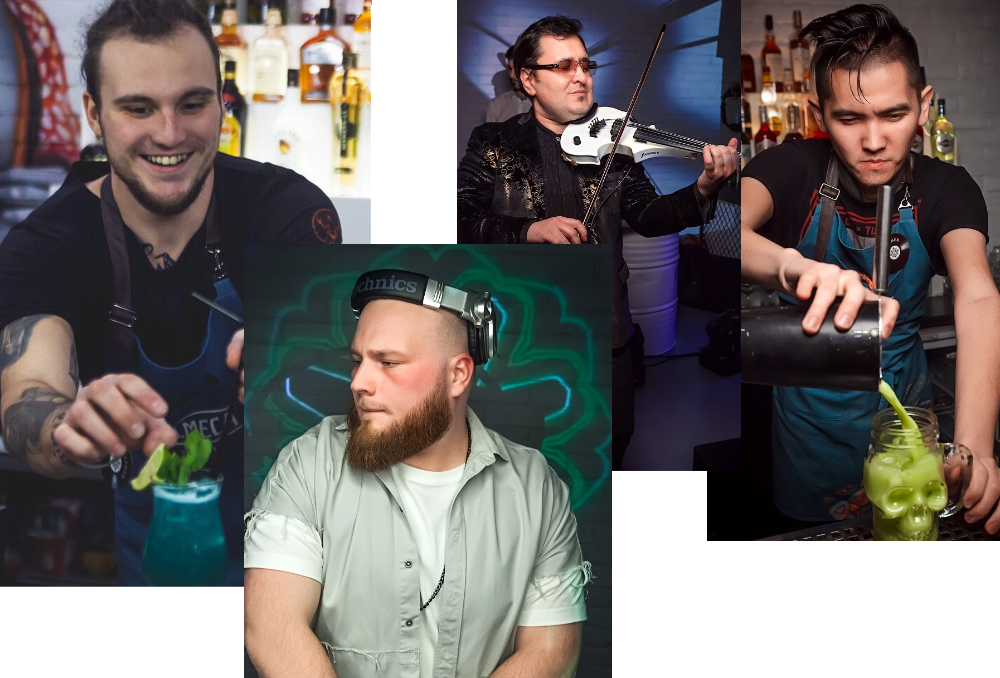

GASTROLI DJ BAR
Первый и единственный в городе Барнаул DJ Bar. Неповторимая кухня, уникальные фирменные коктейли и коктейли, приготовленные по классическим канонам, удивительная атмосфера, лучшие DJ города, профессиональные бармены и лучший отдых в городе. Это только малая часть того что вы можете получить в нашем баре.
Доверься команде профессионалов

Уникальная кухня
В меню находятся уникально подобранные блюда европейской и среднеземноморской кухни. Удивительные совеиания принесут вам вкусовой восторг.

Приглашаем вас провести вечер в теплой компании, наслаждаясь превосходной кухней и фирменным обслуживанием.
1. ОБЩИЕ ПОЛОЖЕНИЯ
1.1. Настоящие Правила поведения Посетителей и организации порядка посещения (далее – Правила) разработаны в соответствии с Гражданским законодательством РФ, Кодексом Российской Федерации об административных правонарушениях" от 30.12.2001 N 195-ФЗ (ред. от 01.05.2016) Законом РФ от 07.02.1992 N 2300-1 (ред. от 13.07.2015) "О защите прав потребителей", Постановлением Правительства РФ от 15.08.1997 N 1036 (ред. от 04.10.2012) "Об утверждении Правил оказания услуг общественного питания" и устанавливают правила поведения обязательные для всех Посетителей/Гостей Бара.
1.2. Настоящие Правила определяют права и обязанности Гостей/Посетителей и Бара и направлены на создание максимально комфортной атмосферы для всех присутствующих во время работы предприятия. Правила являются обязательными для всех без исключения Посетителей заведения.
Принимая решение войти в Бар, Гость подтверждает свое согласие с данными Правилами.
В пятницы, субботы, праздничные, предпраздничные дни, в концертные дни с 20 часов гости, оплачивая входной билет, получают взамен браслет, который надевается им на руку.
Браслет является для службы внутреннего контроля и сотрудников, бара подтверждением оплаты входного билета гостем.
В пятницы, субботы, праздничные, предпраздничные дни, в концертные дни с 20 часов гость имеет право находится на территории бара только при наличии целого браслета, полученного в день мероприятия при входе в бар. При обнаружении отсутствия у гостя целого браслета служба внутреннего контроля оставляет за собой право потребовать у гостя произвести оплату входного билета. В целях предотвращения террористических актов и противоправных действий, в целях безопасного отдыха наших гостей на территории бара служба внутреннего контроля производит внешний визуальный осмотр гостей и их сумок, пакетов, ручной клади и т.п. на предмет исключения попадания на территорию ресторана запрещенных предметов и веществ.Бар является частной собственностью и оставляет за собой право в ограничении доступа в Бар без объяснения причин. С целью обеспечения надлежащего порядка в Баре, администрация вправе осуществлять видео — контроль.
1.3. Контроль за соблюдением настоящих Правил осуществляется сотрудниками частного охранного предприятия ООО ЧОО «ЗОРГ», с которым заключен договор на оказание охранных услуг.
1.4. Бар открыт для допуска и обслуживания Посетителей, достигших возраста - 21 год, поскольку в Баре проводятся мероприятия, предназначенные исключительно для данной возрастной категории и старше.
О проведении мероприятий, открытых для допуска и обслуживания Посетителей, моложе 21 года, администрация извещает Посетителей путем вывески соответствующего объявления при входе в Бар, Афиши, а также размещения соответствующей информации на сайте Бара.
Во избежание привлечения Бара к ответственности за нарушение ограничений, связанных с допуском и обслуживанием несовершеннолетних Посетителей, Посетителей не достигших возраста 21 года, сотрудник Бара или охранник вправе попросить предъявить документ, удостоверяющий личность Посетителя и его возраст, и, в случае отказа от предъявления документов, - отказать Посетителю в допуске и обслуживании.
Часы работы Бара:
Будние дни с 12 до 6.00,
Выходные дни с 12 до 8.00.
По указанию администрации Бара часы допуска и обслуживания Посетителей могут быть изменены.
1.5. Допуск и обслуживание Посетителей осуществляется преимущественно на основе предварительного бронирования мест по телефону 534-222 или на сайте www.xxxx22.ru.
Остальные Посетители обслуживаются при наличии свободных (не забронированных) мест.
В дни (часы), когда все места в Баре забронированы для проведения банкета и/или иного спец-обслуживания, в Бар допускаются только те Посетители, которые указаны и/или внесены в список лицом, осуществившим бронирование.
1.6. Несовершеннолетние до 14 лет допускаются в Бар и обслуживаются только в сопровождении взрослых.
Несовершеннолетние до 16 лет, в случае нахождения в Баре без взрослых, допускаются в Бар и обслуживаются до 22.00 ч.
Несовершеннолетние от 16 до 18 лет в случае нахождения их в Баре без взрослых, допускаются в Бар и обслуживаются до 23.00 ч.
2.ПОРЯДОК ОКАЗАНИЯ УСЛУГ ПО ПРЕДВАРИТЕЛЬНОМУ ЗАКАЗУ БЛЮД И БРОНИРОВАНИЮ СТОЛА
2.1. Предварительный заказ (бронирование) стола в Баре может осуществляться посредством телефонной связи 534-222 и/или через сайт бара.
2.2. В случаях, отсутствия Посетителя в ранее оговоренное сторонами время в Баре, не уведомления и/или несвоевременного уведомления сотрудников Бара о задержке времени посещения Бара, бронь стола сохраняется за ним в течении 15 (пятнадцати) минут с момента заявленного (оговоренного сторонами) времени.
По истечении указанного времени бронь автоматически (без уведомления Посетителя) снимается.
2.3. Надлежащим уведомлением от Посетителя о возникшей задержке времени посещения Бара признается заранее (не менее чем за 20 минут до ранее оговоренного времени) сделанный Посетителем телефонный звонок сотрудникам Бара 534-222.
2.4. При заказе стола Посетителям необходимо внести на расчетный счет и/или в кассу Бара депозит в размере не менее 1 000 (одной тысячи) рублей с человека.
Впоследствии сумма внесенного депозита включается в счет оплаты стоимости заказанных Посетителем напитков (алкогольной/безалкогольной продукции), кухни, аромококтейлей и др.
2.5. Разница между общей (итоговой) суммой заказа и суммой внесенного Посетителем депозита, возврату не подлежит (в случае, если итоговая сумма заказа равна менее суммы внесенного депозита).
В случае превышения суммы заказа размера депозита, разница подлежит возмещению путем внесения Посетителем дополнительной платы.
2.6. В случаях, внесения Посетителем суммы депозита (без предварительного заказа напитков (алкогольной/безалкогольной продукции), кухни, аромококтейлей и др.блюд), но отсутствия Посетителя в ранее оговоренное сторонами время в Баре, не уведомления и/или несвоевременного уведомления сотрудников Бара о задержке времени посещения Бара (п.2.3 Раздела 2 настоящих Правил) по требованию Посетителя, ему возвращается часть суммы депозита в размере 50%.
2.7. В случаях, внесения Посетителем суммы депозита и предварительного заказа Посетителем напитков (алкогольной/безалкогольной продукции), кухни, аромококтейлей и др., но отсутствия Посетителя в ранее оговоренное сторонами время в Баре, не уведомления и/или несвоевременного уведомления сотрудников Бара о задержке времени посещения Бара (п.2.3 Раздела 2 настоящих Правил) сумма депозита засчитывается в счет оплаты заказа Посетителя и возврату не подлежит.
2.8.В случае проведения банкета и/или иного торжественного мероприятия, для которого необходимо спец-обслуживание, Посетитель обязан внести предоплату в размере не менее 50% от общей стоимости заказа.
2.9. По общему правилу, в счет включаются блюда и напитки, заказанные всеми Посетителями, сидящими за одним столом.
О необходимости выставления индивидуальных счетов Посетители обязаны предупредить официанта в момент заказа.
2.10. В счет не включаются «чаевые» официанту. Необходимость «чаевых» и их размер определяются на усмотрение Посетителя. Проценты за обслуживание включаются в Счёт-заказ при проведении банкетных мероприятий.
2.11. Бар принимает заказы на спец-обслуживание, проведение банкета и/или иного торжественного мероприятия только на условиях внесения аванса, размер которого указан в п.2.8. настоящих Правил.
НравитсяПоказать список оценивших
3. ПРАВА И ОБЯЗАННОСТИ ПОСЕТИТЕЛЕЙ
3.1. Посетители Бара обязаны:
- оплатить полную стоимость входного билета в Бар. При этом цена указывается:
на соответствующем Объявлении и размещается при входе в Бар,
на Афиши,
в информационном письме, размещенном на сайте Бара.
- соблюдать общественный порядок;
- оплачивать заказанные им блюда и напитки;
- не мешать другим Посетителям;
- соблюдать чистоту;
- бережно относиться к имуществу Бара (мебель, посуда, сантехника и прочее), а в случае повреждения этого имущества, возместить причиненный ущерб;
- при входе в Бар сдать верхнюю одежду в гардероб;
- предъявить сотрудникам Бара документ, удостоверяющий личность в случае:
1) приобретения Посетителем алкогольной продукции;
2) оплаты счета банковской картой;
3) требования охранника Бара о предъявлении документа, содержащего сведения о возрасте Посетителя.
- соблюдать настоящие Правила.
3.2. Посетители Бара вправе:
- производить оплату счета наличными денежными средствами или банковской картой;
- посещать Бар с детьми с соблюдение правил, установленных в п. 1.6. настоящих Правил.
3.3. Посетителям запрещено:
- без разрешения администрации Бара проходить на кухню, за барную стойку и в другие подсобные помещения Бара;
- проносить в помещение Бара:
животных и птиц;
велосипеды и иные транспортные средства, кроме детских и инвалидных колясок;
громоздкие предметы, сумма измерений которых по длине, ширине (двум диаметрам или осям в основании рулона) и высоте превышает 150 см;
длинномерные предметы, длина которых свыше 220 см.;
легковоспламеняющиеся, взрывчатые, отравляющие, ядовитые вещества и предметы, в том числе бытовые газовые баллоны;
огнестрельное оружие, колющие и режущие предметы;
- использовать для оплаты банковские карты, принадлежащие другим лицам;
-находиться в Баре в состоянии алкогольного, токсического или наркотического опьянения, употреблять наркотические средства или психотропные вещества;
находиться в Баре:
без одежды;
без обуви;
в верхней одежде;
в пляжной одежде;
в спецодежде;
спортивной одежде;
в пачкающей, зловонной одежде, с предметами, которые могут испачкать других Посетителей, мебель Бара.
- обнажать интимные части тела;
- вступать в интимную близость;
- сидеть или лежать на полу, на лестницах;
- вставать, сидеть, лежать или танцевать на столах, на подоконниках;
- забираться с ногами на стулья и кресла;
- сажать друг друга на плечи;
- осуществлять фото- или видеосъемку других Посетителей без их согласия;
- наносить надписи и расклеивать объявления, плакаты и другую продукцию информационного или рекламного содержания;
- использовать помещение Бара для торговли;
- приставать к другим Посетителям или сотрудникам Бара с предложениями купли-продажи, обмена, а также в целях гадания, попрошайничества;
- препятствовать выполнению служебных обязанностей сотрудниками Бара и охранниками;
- грубить сотрудникам и Посетителям Бара;
- провоцировать конфликты и вступать в драки;
- преграждать дорогу или любым другим способом мешать перемещению Посетителей и сотрудников Бара;
- подсаживаться за столики к другим Посетителям без приглашения;
- занимать свободные столики без разрешения администрации Бара;
- использовать пиротехнику;
- играть в карты или иные азартные игры на деньги, вещи и иные ценности;
- курить в непредназначенном (-ых) для этого месте (-ах).
4. ОТВЕТСТВЕННОСТЬ ПОСЕТИТЕЛЕЙ ЗА НАРУШЕНИЕ НАСТОЯЩИХ ПРАВИЛ
4.1. В случае нарушения настоящих Правил администрация Бара вправе:
- производить видео- и аудио-фиксацию нарушения;
- удалить нарушителя с территории Бара;
- в случае необходимости задержать нарушителя и вызвать правоохранительные органы.
4.2. В случае причинения вреда имуществу Бара, Посетитель обязан компенсировать причиненные Бару убытки. Согласно Конфликт-меню (Приложение № 1 к настоящим Правилам).
5. ИНЫЕ ПОЛОЖЕНИЯ
5.1. В целях обеспечения безопасности Посетителей, а также соблюдения Посетителями настоящих Правил в Баре ведется видеонаблюдение.
5.2. Бар не несет ответственности за сохранность личных вещей Посетителей. За утерю номерка, выданного в гардеробе, взимается штраф в размере 300 руб.
5.3. Ди-джей, аниматор, музыканты, ведущий и другие лица, обеспечивающие развлекательную программу Бара, проводят ее в соответствии со сценарием, согласованным с Директором, и вправе отказать Посетителю в совершении действий, не предусмотренных сценарием (поздравление Посетителя, исполнение для него песни или музыкального произведения и другое).
5.4. Бар вправе отказать Посетителю в приготовлении указанного в меню блюда, в случае недопоставки/отсутствия продуктов, необходимых для приготовления такого блюда.
5.5. Бар вправе отказать Посетителю в продаже алкоголя в случае:
- не достижения Посетителем соответствующего возраста (18/21 лет);
- приостановления действия лицензии на продажу алкоголя;
- недопоставки/отсутствия заказанного Посетителем алкоголя;
- нахождения Посетителя в состоянии сильного алкогольного и/или наркотического опьянения.
5.6. В целях обеспечения безопасности здоровья Посетителей в помещении Бара запрещено употреблять принесенные с собой еду и напитки, а также принесенный с собой алкоголь за исключением детского питания.
5.7 Бар вправе ограничить вход Посетителю и отказать в обслуживании, если Гость не соответствует фейсконтролю. Фейсконтро́ль (от англ. face «лицо» и control «проверка») — ограничение входа, выборочный отказ в обслуживании Посетителей (клиентов), не удовлетворяющих определённым критериям. Отказ производится путём недопущения входа неподходящих лиц силами охраны.
5.8.Сотрудники охраны вправе отказать в посещении Бара без объяснения причины.
5.9. В целях обеспечения комфортного отдыха Посетителей и качественной работы сотрудников Бара запрещено мешать работе звукорежиссера и/или других приглашенных лиц.